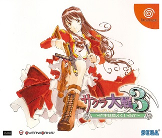
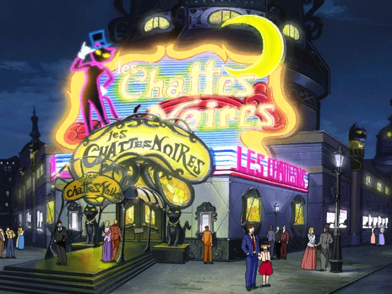

サクラ大戦3 〜巴里は燃えているか〜
Spoiler-safe walkthrough and completion hub for the Sega Dreamcast campaign set in 1926 Paris. Command 大神一郎 across eleven episodes at テアトル・シャノワール, manage every LIPS dialogue prompt, master grid-free ARMS battles, and complete all five heroine routes.
| Japanese Title | サクラ大戦3 〜巴里は燃えているか〜 |
|---|---|
| Release & Media | Sega Dreamcast (March 22, 2001) on 3 GD-ROM discs by Overworks and Red Company |
| Story Structure | Episodes 1 to 11 with 5 heroine endings plus グラン・マ, メル, and シー dance events |
| Dreamcast Hardware | ビジュアルメモリ displays lock-on destruction odds and 携帯キネマトロン alerts alongside the 巴里の二人 mini-game |
| Save Continuity | Imports Dreamcast clear files from サクラ大戦 and サクラ大戦2, and exports clear progress into サクラ大戦4 |
This guide targets the 2001 Dreamcast release, where ARMS actions map to A, B, X, and Y, camera rotation uses L and R triggers, and lock-on damage forecasts appear on the controller ビジュアルメモリ LCD. The 2005 PS2 port moved those readouts to an L2 on-screen window, added R2 fast-skip and password-unlocked radio dramas, and linked with PS2 titles instead of Dreamcast セーブデータ合体.


Guide Sections & Completion Hub
Beginner Tips
Analog LIPS pressure control, AP movement refunds, 5-minute map pacing, and save anchors.
Play Order & Endings
Five heroine ending paths, Episode 6 and 9 branch saves, second-loop perks, and SW4 export.
Game Mechanics
Every LIPS variant, ARMS gauge math, Tactics orders, Combined Attacks, and VMS integration.
Missables & Cutoffs
Chain events, timed Event Catches, Shop bromides per episode, and Vice-Captain lockouts.
Main Story (Ep. 1-11)
Spoiler-free Episode 1 to 11 exploration routes, LIPS answers, and ARMS boss strategies.
Heroines & Squad
Trust profiles, Koubu-F and Koubu-F2 specs, Special ranges, and Ogami Captain ranks.
Collectibles & Omake
All bromides, mini-game tactics, Casino rewards, and Paris Day Off quiz solutions.
Credits & Sources
Walkthrough authors, Japanese strategy archives, Dreamcast manuals, and media attributions.